BUILD SCHEDULE The Warm Skin v1 build as a path of numbered sessions, Day 1 to Day 9, each sized to one evening and unlocked in order: touch and the 40 C cutoff, the seal and flanges, pressure, the 5 V rail and heater, the water bladder, the sensing stack, gestures and pumps, mount and plumb, then a first breath. Tap a stone for that Day, step by step.
Day 1 of 9 next 1 DAY 1 · NEXT touch + cutoff a proven 40 C cutoff unlocks the heater about 1.75 h · 3 steps 2 DAY 2 · LOCKED seal + flanges a sealed pouch unlocks pressure; flanges unlock the bladder about 1.75 h · 3 steps 3 DAY 3 · LOCKED leak + pressure a pressure trace unlocks listening to a hand about 1.5 h · 4 steps 4 DAY 4 · LOCKED rail + heater a steady 36 C heater unlocks warmth about 2 h · 3 steps 5 DAY 5 · LOCKED the bladder a dry, hanging bladder unlocks mount + plumb about 2 h · 2 steps 6 DAY 6 · LOCKED sensing stack a stitched stack unlocks gesture logging about 2 h · 2 steps 7 DAY 7 · LOCKED gestures + pumps six gestures + pump flow unlock plumbing about 1.75 h · 2 steps 8 DAY 8 · LOCKED mount + plumb a warm, plumbed bladder unlocks assembly about 1.5 h · 2 steps 9 DAY 9 · LOCKED first breath a first breath unlocks breathing with you about 2 h · 3 steps THEN: BREATHING ENTRAINMENT > TUNE + MORE PEOPLE > DEMO CLIP > POLISH FOR MIT MAS the path · finish a Day to open the next · tap a stone
The parts hover or tap: photo, real size, what it does
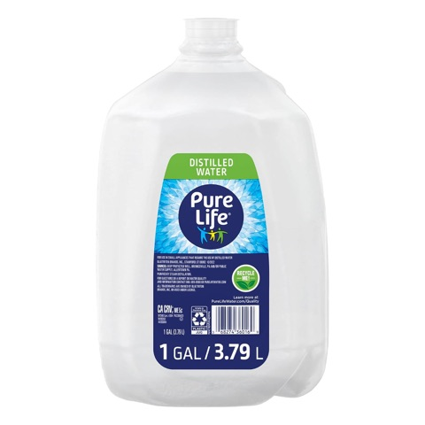
Distilled water 1 gal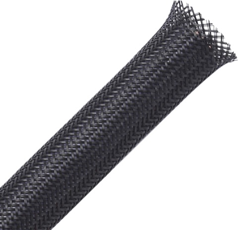
PET braided sleeving 1/4 + 1/2 in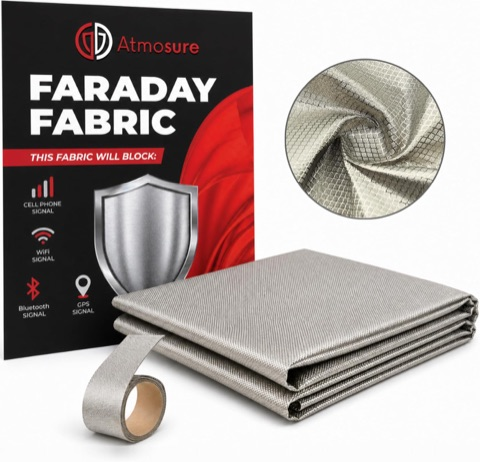
Copper-nickel fabric + tape (electrodes + shield)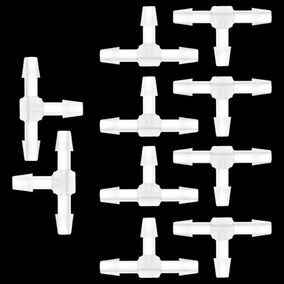
1/8 in barb tees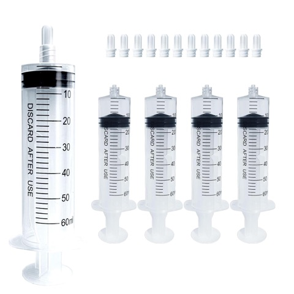
60 mL luer-lock syringes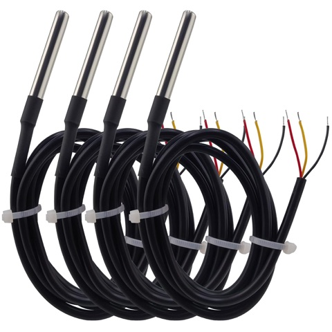
DS18B20 probes x4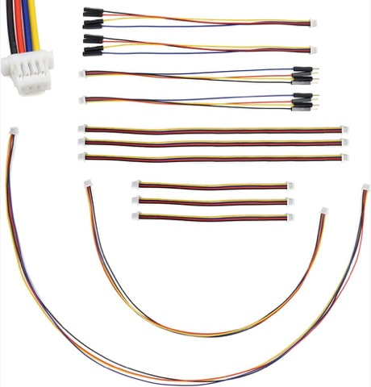
Qwiic cable kit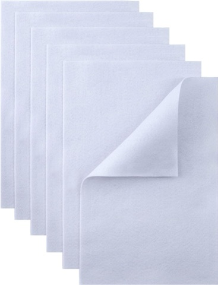
Felt sheets 1.5 mm (spacer)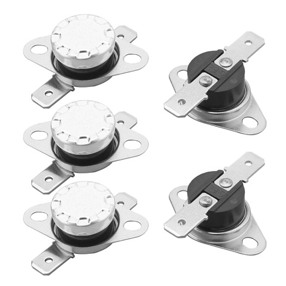
KSD301 40 C cutoff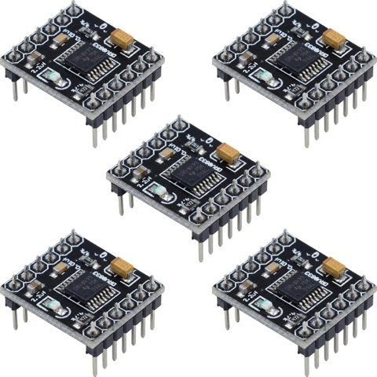
DRV8833 motor driver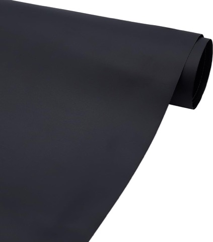
TPU fabric 1 yd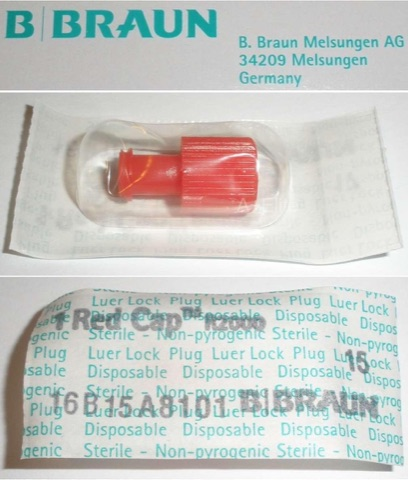
Luer plugs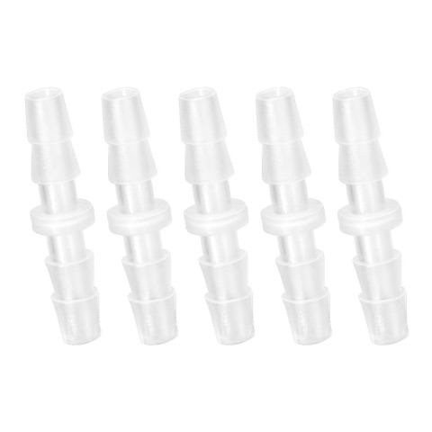
1/8 in barb unions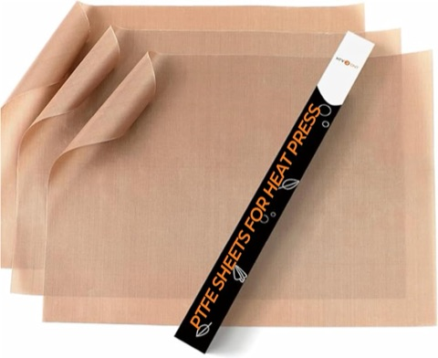
PTFE sheets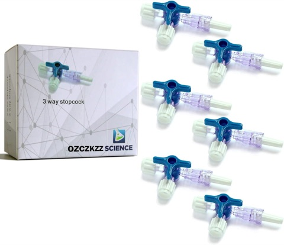
3-way luer stopcocks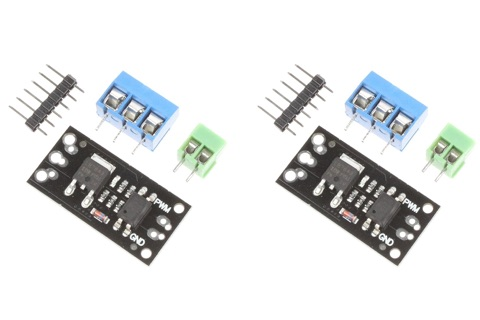
NOYITO LR7843 MOSFET module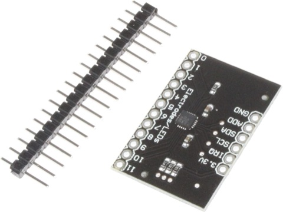
MPR121 capacitive breakout (backup)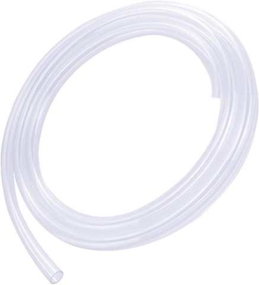
2 mm ID silicone tube (sensor port)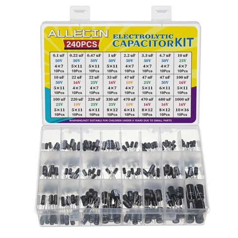
Electrolytic capacitor kit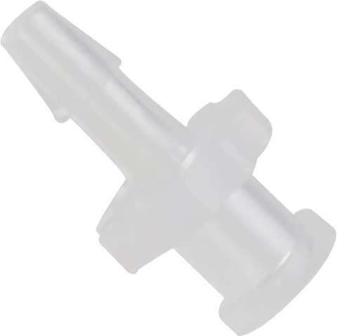
Female luer to 1/8 in barb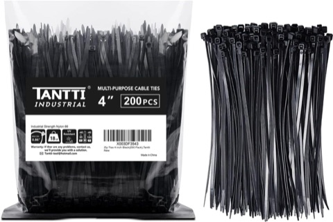
Zip ties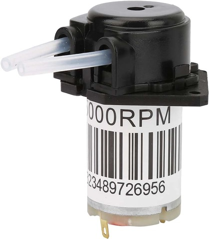
6 V peristaltic pumps x2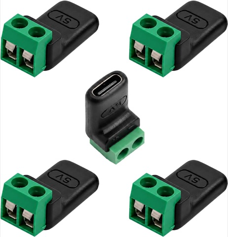
USB-C to screw terminal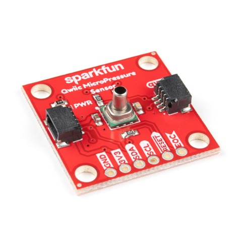
SparkFun Qwiic MicroPressure (25 psi)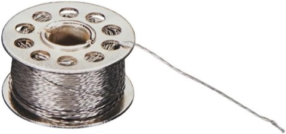
Stainless conductive thread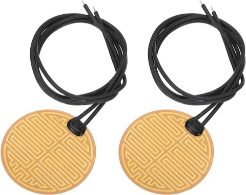
5 V 8 W heater film x2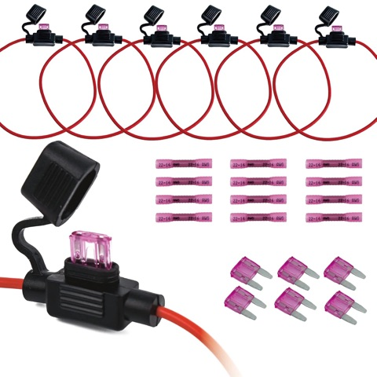
Inline fuse holders + 3 A fuses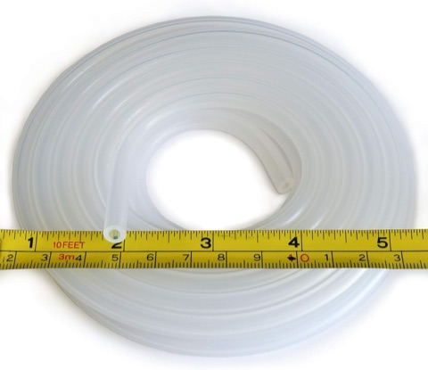
Silicone tubing 1/8 in ID, 5 ft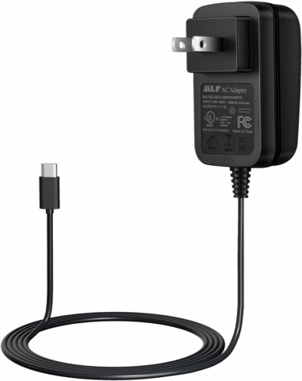
5 V 3 A USB-C supply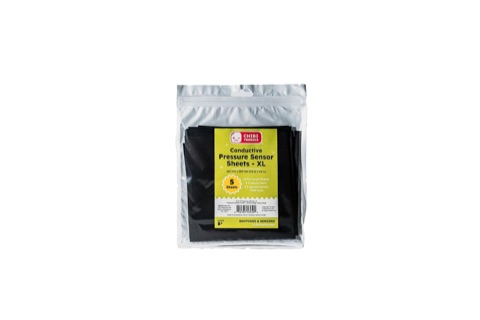
Velostat XL sheets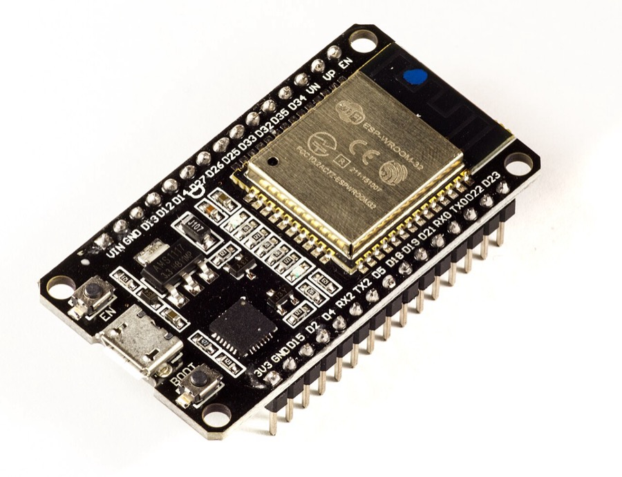
ESP32-WROOM (ESP32-DevKitC)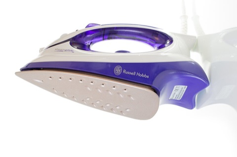
Household iron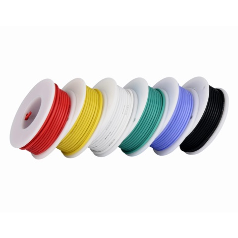
Her own wire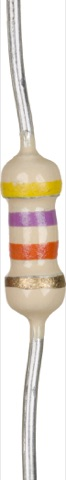
4.7 kOhm resistors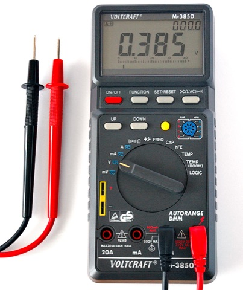
Multimeter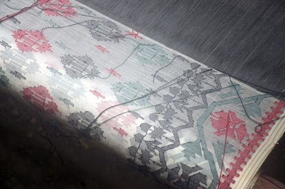
Organic fabric (top skin)where it sits on the map · tap a dot created Oct 14, 2026 · worked on 1 day · last Oct 14, 2026Sep 21, 2026 Sep 22, 2026 Sep 23, 2026 Sep 24, 2026 Sep 25, 2026 Sep 26, 2026 Sep 27, 2026 Sep 28, 2026 Sep 29, 2026 Sep 30, 2026 Oct 1, 2026 Oct 2, 2026 Oct 3, 2026 Oct 4, 2026 Oct 5, 2026 Oct 6, 2026 Oct 7, 2026 Oct 8, 2026 Oct 9, 2026 Oct 10, 2026 Oct 11, 2026 Oct 12, 2026 Oct 13, 2026 Oct 14, 2026 Oct 15, 2026 Oct 16, 2026 Oct 17, 2026 Oct 18, 2026 Oct 19, 2026 Oct 20, 2026 the last 30 days